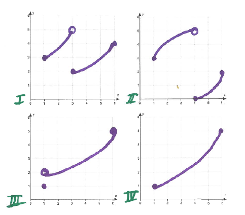

- (a)
- Given function \(f\) on an interval \([a,b]\):
- (i)
- What are the conditions of the Intermediate Value Theorem?
- (ii)
- What is the conclusion of the Intermediate Value Theorem?
- (b)
- Given the four functions on the interval \([1,6]\), answer the questions below.

- (i)
- For each of the functions I through IV, indicate \(f(1)\) and \(f(6)\). Then mark the interval of all numbers strictly between \(f(1)\) and \(f(6)\), on the y-axis.
- (ii)
- For each of the functions I through IV, write an interval of all numbers strictly between \(f(1)\) and \(f(6)\)
- (iii)
- List the functions that satisfy the conditions of the Intermediate Value Theorem on \([1,6]\)
- (iv)
- For which of the functions is the following statement true: For any number \(L\) strictly between \(f(1)\) and \(f(6)\), there exists a number \(c\) in \((1,6)\) satisfying \(f(c)=L\).
- (v)
- Does the function III satisfy the conclusion of the Intermediate Value
Theorem? Why or why not? No, function \(III\) does not satisfy the conclusion of the IVT. For example, take \(L=1.5\). \(f(c)=1.5\) has no solution in \((1,6)\). Draw the horizontal line \(y=1.5\). What do you notice? This line does not intersect the graph of function III. What does this mean? The function does not attain that value, \(1.5\). So there is no \(c\) in \((1,6)\) such that \(f(c)=1.5\).